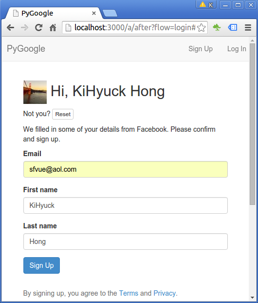

<!DOCTYPE html>

<!-- Mirrored from www.bogotobogo.com/RubyOnRails/RubyOnRailsFacebook-and-Twitter-Authentication-SignUp-Login-using-Omniauth-oauth2-with-redis-memcached-and-postgres-via-Starter-Kit.php by HTTrack Website Copier/3.x [XR&CO'2014], Tue, 12 Dec 2017 11:18:45 GMT -->
<head>
  <title>Ruby on Rails Facebook and Twitter Authentication using Omniauth-oauth2 - 2017</title>
  <meta content="Ruby on Rails Facebook and Twitter Authentication using Omniauth-oauth2" name="description" />
  <meta content="Ruby on Rails Facebook and Twitter Authentication using Omniauth-oauth2,Ruby : Rails 4.1 Starter Kit, web framework,  rails db:setup, redis, memcached, postgres, twitter authentication, Facebook authentication, Twitter App ID, Twitter App Secret, Facebook App ID, Facebook Secret, Spring vs Zeus, Bootstrap 3 vs Foundation 5, mailer previews, rake about, bundle install, Heroku deploy" name="keywords" />
  <meta name="viewport" content="width=device-width, initial-scale=1">

  <link href="http://netdna.bootstrapcdn.com/bootstrap/3.0.0/css/bootstrap.no-icons.min.css" rel="stylesheet">
  <link href="http://netdna.bootstrapcdn.com/font-awesome/4.0.3/css/font-awesome.css" rel="stylesheet">
  <link rel="stylesheet" href="http://fonts.googleapis.com/css?family=Alice|Open+Sans:400,300,700">
  <link rel="stylesheet" href="../public/css/app.css">
  <link rel="stylesheet" href="../public/css/styles.css">
  <link rel="stylesheet" href="../public/css/bogostyleWidePreNew.css">
</head>

<body class="home">
    <nav class="navbar navbar-default navbar-fixed-top">
    <div class="container-fluid">      
      <div class="navbar-header">
        <!--<button type="button" class="navbar-toggle collapsed" data-toggle="collapse" data-target="#navbar" aria-expanded="false" aria-controls="navbar"> -->
        <button type="button" class="navbar-toggle collapsed" data-toggle="collapse" data-target=".navbar-collapse" aria-expanded="false" aria-controls="navbar"> 
          <span class="sr-only">Toggle navigation</span> 
          <span class="icon-bar"></span> 
          <span class="icon-bar"></span> 
          <span class="icon-bar"></span> 
        </button>
        <a class="navbar-brand" href="../index-2.html">BogoToBogo</a>
      </div>
      
      <div class="navbar-collapse collapse">
        
        <ul class="nav navbar-nav">
          <li class="active"><a href="../index-2.html">Home</a></li>
          <li><a href="../about_us.html">About</a></li>
          <li><a href="../Hadoop/BigData_hadoop_Install_on_ubuntu_single_node_cluster.html">Big Data</a></li>
          <li><a href="../python/scikit-learn/Artificial-Neural-Network-ANN-1-Introduction.html">Machine Learning</a></li>
          <li><a href="../AngularJS/AngularJS_Introduction.html">AngularJS</a></li> 
          <li><a href="../python/pytut.html">Python</a></li>
          <li><a href="../cplusplus/cpptut.html">C++</a></li>
          <li><a href="../DevOps/DevOps_Jenkins_Chef_Puppet_Graphite_Logstash.html">DevOps </a></li>
          <li><a href="../Algorithms/algorithms.html">Algorithms</a></li> 
          <li class="dropdown">
            <a href="#" class="dropdown-toggle" data-toggle="dropdown">More...<b class="caret"></b></a>
            <ul class="dropdown-menu">
           
              <li><a href="../Qt/Qt5_Creating_QtQuick2_QML_Application_Animation_A.html">Qt 5</a></li>                           
              <li><a href="../Android/android.html">Android</a></li>
              
              <li><a href="../Linux/linux_tips1.html">Linux</a></li>
              <li><a href="../Java/tutorials/on_java.html">Java</a></li>
              <li><a href="../CSharp/.netframework.html">CSharp</a></li>
              <li><a href="../VideoStreaming/videostreaming_etc.html">Video Streaming</a></li>
              <li><a href="../FFMpeg/ffmpeg_fade_in_fade_out_transitions_effects_filters_slideshow_concat.html">FFmpeg</a></li>
              <li><a href="../Matlab/Matlab_Tutorial_Manipulating_Audio_I_Reverse_Delay_Tone_Control_Changing_Speed_Removing_Vocals.html">Matlab</a></li>
              <li><a href="../python/Django/Python_Django_Forums_Shared_Host.html">Django 1.8</a></li>
              <li><a href="../Laravel5/Laravel5_ToDo_List_Sample.html">Laravel 5.2</a></li>
              <li><a href="RubyOnRails.html">Ruby On Rails</a></li>
              <li><a href="../HTML5/HTML5_Tutorial.html">HTML5 & CSS</a></li>
              <li><a href="../AmazingPlaces/index.html" target="_blank">
Earth</a> </li>
            </ul>
          </li>
        </ul>      
      </div>
    </div>  
  </nav>  

  <div id="main">
    <div class="container">
      <div class="row section featured topspace">
        <div class="row">
          <div class="col-sm-9 col-md-9 col-xs-9">
            <h2 class="section-title">Ruby on Rails Facebook and Twitter Authentication using Omniauth-oauth2      <g:plusone></g:plusone></h2>
            <div class="icon-image">
               
            </div>
            <div class="SocialLinks">
  <span class='st__large' displayText=''></span>
  <br><br>
  <div align="center">
  <span class='st_facebook_large' displayText='Facebook'></span>
  <span class='st_twitter_large' displayText='Tweet'></span>
  <span class='st_linkedin_large' displayText='LinkedIn'></span>
  </div>
  <br><br>
  <script type="text/javascript" src="http://w.sharethis.com/button/buttons.js"></script>
  <script type="text/javascript">stLight.options({publisher: "b9569c43-5f56-4501-92f0-4bf4aa8fceb0", doNotHash: false, doNotCopy: true, hashAddressBar: false});</script>
</div>

<div id="bookmarkshare">
  <script type="text/javascript">var addthis_config = {"data_track_clickback":true};</script>
  <a class="addthis_button" href="http://www.addthis.com/bookmark.php?v=250&amp;username=khhong7"></a>
  <script type="text/javascript" src="http://s7.addthis.com/js/250/addthis_widget.js#username=khhong7"></script>
</div>

<br>
<hr>
<br>


<!-- Google bogo1 ad -->
<!-- Google search box -->


<!-- bogo1 -->
<div>
  <script async src="http://pagead2.googlesyndication.com/pagead/js/adsbygoogle.js"></script>
  <!-- bogo1 -->
  <ins class="adsbygoogle"
     style="display:inline-block;width:728px;height:90px"
     data-ad-client="ca-pub-4716428189734495"
     data-ad-slot="6542308167"></ins>
  <script>
   (adsbygoogle = window.adsbygoogle || []).push({});
  </script>
</div>


<!-- Google search box -->
<div class="AdSenseSearch">
  bogotobogo.com site search:
  <form action="http://www.google.com/" id="cse-search-box" target="_blank">
    <div>
      <input type="hidden" name="cx" value="partner-pub-4716428189734495:1794050961" />
      <input type="hidden" name="ie" value="UTF-8" />
      <!--<input type="text" name="q" size="55" />-->
      <input type="text" name="q" size="" width="90%"/>
      <input type="submit" name="sa" value="Search" />
    </div>
  </form>
  <script type="text/javascript" src="http://www.google.com/coop/cse/brand?form=cse-search-box&amp;lang=en"></script>
</div>


<hr>
            <br><br><br>
<div class="subtitle_2nd" id="Note">Note</div>
<p>In this article, we'll create an app with Facebook and Twitter Authentication using Omniauth-oauth2. We'll need to install redis, memcached, and postgres in the process. We starts with <a href="https://github.com/starterkits/rails4-starterkit" target="_blank">Rails 4.1 Starter Kit</a> instead of starting from scratch.</p>

<br/>
<p>At the end of this tutorial, I'll have my version of starter kit called <b>Rains4-PyGoogle</b>. The new source will be placed at <a href="https://github.com/PyGoogle/Rails4-PyGoogle.git" target="_blank">Rails4-PyGoogle.git</a>.</p>
<br/>
<br/>
<br/>
<br/>
<div class="subtitle_2nd" id="Rails-Starter-Kit">Rails 4.1 Starter Kit on Ubuntu 14.04</div>
<p>Got <a href="https://github.com/starterkits/rails4-starterkit" target="_blank">Rails 4.1 Starter Kit</a> from GitHub.</p>
<pre class="prettyprint">
$ git clone https://github.com/starterkits/rails4-starterkit.git
$ cd rails4-starterkit
</pre>
<p>Then, I copied everything over to my project directory:</p>
<pre class="prettyprint">
$ cp -r * ~/PyGoogle
</pre>
<p>Next thing is to choose between <b>Bootstrap 3</b> vs <b>Foundation 5</b> for the front-end framework. Have a look at the difference between the two: <a href="https://www.codementor.io/css/tutorial/bootstrap-3-vs-foundation-5-front-end-framework-comparison" target="_blank">Bootstrap 3 vs. Foundation 5: Which Front-end Framework Should You Use?</a>.</p>
<p>I chose <b>Bootstrap 3</b>.</p>
<br/>
<br/>

<!-- Google bogo_square_ad -->
<div>
  <script type="text/javascript">
    google_ad_client = "ca-pub-4716428189734495";
    /* bogo_LargeRectangle_336_280 */
    google_ad_slot = "2712696561";
    google_ad_width = 336;
    google_ad_height = 280;
  </script>
  <script type="text/javascript"
    src="http://pagead2.googlesyndication.com/pagead/show_ads.js">
  </script>
</div>
<br>


<br/>
<br/>
<div class="subtitle_2nd" id="bundle-install">bundle install</div>
<p>Install packages using <b>bundle</b> command:</p>
<pre class="prettyprint">
$ bundle install
</pre>
<br/>
<br/>
<br/>
<br/>
<div class="subtitle_2nd" id="Project-files">Project files</div>
<p>Here is the file structure for our app:</p>

<br/>
<br/>
<br/>
<br/>
<div class="subtitle_2nd" id="memcached-install">memcached install</div>
<p>Install <b>memcached</b>:</p>
<pre class="prettyprint">
$ sudo apt-get install mysql-server php5-mysql php5 php5-memcached memcached
</pre>
<p>Run it:</p>
<pre class="prettyprint">
$ sudo service memcached restart
</pre>
<br/>
<br/>
<br/>
<br/>
<div class="subtitle_2nd" id="redis-install">redis install</div>
<p>Install <b>redis</b>:</p>
<pre class="prettyprint">
$ wget http://download.redis.io/redis-stable.tar.gz
$ tar xvzf redis-stable.tar.gz
$ cd redis-stable
$ make
</pre>
<ol>
<li><b>redis-server</b> is the Redis Server itself.</li>
<li><b>redis-sentinel</b> is the Redis Sentinel executable (monitoring and failover).</li>
<li><b>redis-cli</b> is the command line interface utility to talk with Redis.</li>
<li><b>redis-benchmark</b> is used to check Redis performances.</li>
<li><b>redis-check-aof</b> and redis-check-dump are useful in the rare event of corrupted data files.</li>
</ol>
<p>Run <b>radis</b>:</p>
<pre class="prettyprint">
k@laptop:~/redis-stable$ ./src/redis-server redis.conf 
3436:M 17 Jan 15:48:10.354 # You requested maxclients of 10000 requiring at least 10032 max file descriptors.
3436:M 17 Jan 15:48:10.355 # Redis can't set maximum open files to 10032 because of OS error: Operation not permitted.
3436:M 17 Jan 15:48:10.355 # Current maximum open files is 4096. maxclients has been reduced to 4064 to compensate for low ulimit. If you need higher maxclients increase 'ulimit -n'.
                _._                                                  
           _.-``__ ''-._                                             
      _.-``    `.  `_.  ''-._           Redis 3.0.6 (00000000/0) 64 bit
  .-`` .-```.  ```\/    _.,_ ''-._                                   
 (    '      ,       .-`  | `,    )     Running in standalone mode
 |`-._`-...-` __...-.``-._|'` _.-'|     Port: 6379
 |    `-._   `._    /     _.-'    |     PID: 3436
  `-._    `-._  `-./  _.-'    _.-'                                   
 |`-._`-._    `-.__.-'    _.-'_.-'|                                  
 |    `-._`-._        _.-'_.-'    |           http://redis.io        
  `-._    `-._`-.__.-'_.-'    _.-'                                   
 |`-._`-._    `-.__.-'    _.-'_.-'|                                  
 |    `-._`-._        _.-'_.-'    |                                  
  `-._    `-._`-.__.-'_.-'    _.-'                                   
      `-._    `-.__.-'    _.-'                                       
          `-._        _.-'                                           
              `-.__.-'                    
</pre>
<br/>
<br/>
<br/>
<br/>
<div class="subtitle_2nd" id="postgres-install">postgres install</div>
<p>Install <b>postgres</b>:</p>
<pre class="prettyprint">
$ sudo apt-get install postgresql postgresql-contrib
</pre>
<p>We can go into the postgres shell with a user name <b>postgres</b>:</p>
<pre class="prettyprint">
k@laptop:~$ sudo -i -u postgres
postgres@laptop:~$ psql
psql (9.3.9)
Type "help" for help.

postgres=# 
</pre>
<br/>
<br/>
<br/>
<br/>
<div class="subtitle_2nd" id="rails db:setup">rails db:setup</div>
<p>Let's setup the db:</p>
<pre class="prettyprint">
$ rake db:setup
</pre>
<p>During the setup, I got postgres error:</p>
<pre class="prettyprint">
$ rake db:setup
...
Couldn't create database for {"adapter"=&gt;"postgresql", "encoding"=&gt;"unicode", "database"=&gt;"starterkit_test", "pool"=&gt;5, "username"=&gt;"postgres", "password"=&gt;nil}
psql: FATAL:  Peer authentication failed for user "postgres"
rake aborted!
PG::ConnectionBad: FATAL:  Peer authentication failed for user "postgres"
...
</pre>
<p>So, following the suggestion from <a href="http://stackoverflow.com/questions/18664074/getting-error-peer-authentication-failed-for-user-postgres-when-trying-to-ge" target="_blank">Getting error: Peer authentication failed for user "postgres", when trying to get pgsql working with rails</a>, I modified <b>/etc/postgresql/9.3/main/pg_hba.conf</b> from <b>peer</b> to <b>md5</b>:</p>
<pre class="prettyprint">
# local   all             postgres                                peer
local   all             postgres                                md5
</pre>
<p>Then, restart postgres:</p>
<pre class="prettyprint">
$ sudo service postgresql restart
 * Restarting PostgreSQL 9.3 database server                                                 [ OK ]
</pre>
<p>Now, we can run <b>rake db:setup</b> successfully!</p>
<p>After running the command, we can see <b>rake db:setup</b> created DBs for us:</p>
<pre class="prettyprint">
$ psql -U postgres -h localhost
psql (9.3.9)
SSL connection (cipher: DHE-RSA-AES256-GCM-SHA384, bits: 256)
Type "help" for help.

postgres=# \l
                                        List of databases
          Name          |  Owner   | Encoding |   Collate   |    Ctype    |   Access privileges   
------------------------+----------+----------+-------------+-------------+-----------------------
...
 postgres               | postgres | UTF8     | en_US.UTF-8 | en_US.UTF-8 | 
 pygoogle_development   | postgres | UTF8     | en_US.UTF-8 | en_US.UTF-8 | 
 pygoogle_test          | postgres | UTF8     | en_US.UTF-8 | en_US.UTF-8 | 
...
</pre>
<p>Just for reference, here is the list of <b>rake db:</b> tasks:</p>
<ol>
<li><b>db:create</b> Creates the database for the current RAILS_ENV environment. If RAILS_ENV is not specified it defaults to the <em>development</em> and <em>test</em> databases.</li>
<li><b>db:create:all</b> Creates the database for <em>all</em> environments.</li>
<li><b>db:drop</b> Drops the database for the current RAILS_ENV environment. If RAILS_ENV is not specified it defaults to the <em>development</em> and <em>test</em> databases.</li>
<li><b>db:drop:all</b> Drops the database for <em>all</em> environments.</li>
<li><b>db:migrate</b> Runs migrations for the current environment that have not run yet. By default it will run migrations <em>only</em> in the <em>development</em> environment.</li>
<li><b>db:migrate:redo</b> Runs <b>db:migrate:down</b> and <b>db:migrate:up</b> or <b>db:migrate:rollback</b> and <b>db:migrate:migrate</b> depending on the specified migration. I usually run this after creating and running a new migration to ensure the migration is reversable.</li>
<li><b>db:migrate:up</b> Runs the <em>up</em> for the given migration VERSION.</li>
<li><b>db:migrate:down</b> Runs the <em>down</em> for the given migration VERSION.</li>
<li><b>db:migrate:status</b> Displays the current migration status.</li>
<li><b>db:migrate:rollback</b> Rolls back the last migration.</li>
<li><b>db:version</b> Prints the current schema version.</li>
<li><b>db:forward</b> Pushes the schema to the next version.</li>
<li><b>db:seed</b> Runs the <em>db/seeds.rb</em> file.</li>
<li><b>db:schema:load</b> Loads the schema into the current environment's database.</li>
<li><b>db:schema:dump</b> Dumps the current environment's schema to <em>db/schema.rb</em>.</li>
<li><b>db:setup</b> Runs <b>db:schema:load</b> and <b>db:seed</b>.</li>
<li><b>db:reset</b> Runs <b>db:drop</b> and <b>db:setup</b>.</li>
<li><b>db:migrate:reset</b> Runs <b>db:drop</b>, <b>db:create</b> and <b>db:migrate</b>.</li>
<li><b>db:test:prepare</b> Check for pending migrations and load the test schema. (If you run <em>rake</em> without any arguments it will do this by default.)</li>
<li><b>db:test:clone</b> Recreate the test database from the current environment's database schema.</li>
<li><b>db:test:clone_structure</b> Similar to <b>db:test:clone</b>, but it will ensure that your test database has the same structure, including charsets and collations, as your current environment's database.</li>
</ol>
<p>For example, we can drop the newly create DBs: pygoogle_development &amp; pygoogle_test:</p>
<pre class="prettyprint">
$ rake db:drop
</pre>
<p>Since we drop them, we may want to create them again to make our demo to work:</p>
<pre class="prettyprint">
$ rake db:setup
</pre>
<p>Actually, the DBs are created by referencing to <b>config/database.yml</b>:</p>
<pre class="prettyprint">
development:
  adapter: postgresql
  encoding: unicode
  database: &lt;%= Rails.application.config.settings.app_name %&gt;_development
...
test:
  adapter: postgresql
  encoding: unicode
  database: &lt;%= Rails.application.config.settings.app_name %&gt;_test
  pool: 5
  username: postgres
  password:
...
</pre>
<br/>
<br/>
<br/>
<br/>
<div class="subtitle_2nd" id="application-yml">config/application.yml</div>
<p>The <b>config/application</b> has basic configuration information, and it has some secrets that we don't want be exposed to outside, and it will not be pushed into our repo as it is. So, <b>config/application.yml</b> file in the repo  is just for demo sample.</p>
<p>The <b>config/settings.rb</b> specifies the <b>application.yml</b>:</p>
<pre class="prettyprint">
source File.expand_path('../application.yml', __FILE__)
</pre>
<p><b>File.expand_path</b> first takes the second argument (<b>__FILE__</b>) and set it as a starting directory, and then goes one up then, uses <b>config/application.yml</b>.</p>
<p>Let's move on. Here is the file:</p>
<pre class="prettyprint">
  social:
    facebook: 'https://www.facebook.com/KHongSanFrancisco'
    twitter: 'https://twitter.com/KHongTwit'
    google_plus: 'google.com/+KHongSanFrancisco'
    linkedin: 'www.linkedin.com/in/KHongSanFrancisco'

  contact:
    email: 'KHongSanFrancisco@gmail.com'
    phone: '777-777-7777'

  session:
    key: '_pygoogle_session'
    expire_after: &lt;%= 30.days %&gt;

  rack:
    # Timeout request after 20 seconds
    timeout: 20

  mail:
    layout: 'emails/email'
    from: 'KHongSanFrancisco@gmail.com'

  # Host used to determine direct requests vs CDN.
  # See RobotsController.
  CANONICAL_HOST: 'pygoogle.herokuapp.com'

  AUTH_FACEBOOK_KEY: '201539556694091'
  AUTH_FACEBOOK_SECRET: '80ae1dc93961b7f9a79265af0eeca698'
  AUTH_TWITTER_KEY: 'hbcu8JvAB1FftWw7c3oog'
  AUTH_TWITTER_SECRET: 'uTspycZ4T7QAeA9QLGBb1zoLrR6K7ChBPdYt8F7nZc'

  # Devise password encryption keys.
  # Channging the keys will invalidate user passwords,
  # forcing users to use the forgot password feature.
  # TODO: make new keys with `rake secret`
  DEVISE_SECRET_KEY: '7da7ce94b67dcb951aba685032aa7ddc17ae2551a7a11b60369eff65f1c3cc0a5525c93900b6315daf1558b973d7f5c0b6e80addd61225d6a23694a5fb8ff83e'
  DEVISE_PEPPER: 'f23254b349cb3712c8c31dbdc4bb40555b0cd2ca9de98a15821ba5c2cb7d232b352e7f992bb8345dc53a2b4091f6b9dd1531bdaf1f1ae516d698e9f870d4e69c'

  # Signed cookie encryption key.
  # TODO: make new key with `rake secret`
  SECRET_KEY_BASE: '16e628ec083d6127ca30716ac69c578ba47a900702f0d498c149b87d06eeebd1bc0be22929e16e2180cb137e9be8bc7f77dd3b9c13fbb306330bb6450cfbc051'

  # Redis server used by Sidekiq, cache, etc.
  REDIS_URL: 'redis://localhost:6379/0'

  # Airbrake/Errbit configuration
  AIRBRAKE_API_KEY: ''
  AIRBRAKE_HOST: ''
</pre>
<br/>
<br/>
<br/>
<br/>
<div class="subtitle_2nd" id="facebook-auth-key">Getting Facebook auth key</div>
<p>To get an 'App' Access Token from Facebook, just follow the steps below:</p>
<ol>
<li>Go to <a href="https://developers.facebook.com/" target='_"blank"'>developers.facebook.com</a> and click on <b>Log In</b> on the top right. Log in using personal Facebook credentials.
  </li>
<li>Because I've already registered, I can do "Add a New App" =&gt; "Advanced"
  </li>
<li>"Create a New App ID" 
  </li>
<li>Go to "Dashboard" and grab "App ID"/"App Secret"
  </li>
</ol>
<br/>
<br/>
<br/>
<br/>
<div class="subtitle_2nd" id="twitter-auth-key">Getting Twitter auth key</div>
<p>Go to <a href="https://apps.twitter.com/app/new" target="_blank">https://apps.twitter.com/app/new</a> and create the new application.</p>

<p>Note: Twitter does not take <b>localhost</b>, so I used <b>0.0.0.0</b> instead.</p>
<br/>
<br/>
<br/>
<br/>
<div class="subtitle_2nd" id="en-yml">config/locales/en.yml</div>
<p>Modified <b>config/locales/en.yml</b>: replaced StarterKit with PyGoogle.</p>
<br/>
<br/>
<br/>
<br/>
<div class="subtitle_2nd" id="application-rb">config/application.rb</div>
<p>Modified <b>config/application.rb</b>: replaced StarterKit with PyGoogle.</p>
<br/>
<br/>
<br/>
<br/>
<div class="subtitle_2nd" id="springvszeus">Spring vs Zeus</div>
<p>Leave Sprint as default in <b>Gemfile</b>. For more info: <a href="https://hackhands.com/fast-tests-comparing-zeus-spring-rails-4-1-rspec-3/" target='_blank"'>Fast Tests: Comparing Zeus With Spring on Rails 4.1 and RSpec 3</a>.</p>
<pre class="prettyprint">
# Use spring or zeus
gem 'spring'                  # keep application running in the background
gem 'spring-commands-rspec'
# gem 'zeus'                  # required in gemfile for guard
</pre>
<br/>
<br/>
<br/>
<br/>
<div class="subtitle_2nd" id="Rails-run">Rails run : rails server</div>
<p>Running <b>rails server</b> will start WEBrick:</p>
<pre class="prettyprint">
$ rails server
=&gt; Booting WEBrick
=&gt; Rails 4.1.6 application starting in development on http://0.0.0.0:3000
=&gt; Run `rails server -h` for more startup options
=&gt; Notice: server is listening on all interfaces (0.0.0.0). Consider using 127.0.0.1 (--binding option)
=&gt; Ctrl-C to shutdown server
[2016-01-18 12:18:40] INFO  WEBrick 1.3.1
[2016-01-18 12:18:40] INFO  ruby 2.1.3 (2014-09-19) [x86_64-linux]
[2016-01-18 12:18:40] INFO  WEBrick::HTTPServer#start: pid=29044 port=3000
</pre>
<p>Remember, we used <b>0.0.0.0:3000</b> as a callback urls for Twitter and Facebook demo app credentials.</p>
<p>Open a browser and type in 0.0.0.0:3000:</p>

<p>At the click on "Sign Up", we get:</p>

<p>Signed in screen:</p>

<p>Signed out:</p>

<p>After signed out, from Login menu. Note the URL (http://0.0.0.0:3000/a/login):</p>

<br/>
<br/>
<br/>
<br/>
<div class="subtitle_2nd" id="facebook-login">Facebook login</div>
<p>I got the following error while I'm try to login via Facebook:</p>
<p>
"Given URL is not allowed by the Application configuration: One or more of the given URLs is not allowed by the App's settings. It must match the Website URL or Canvas URL, or the domain must be a subdomain of one of the App's domains."</p>
<p>So, I had to go to the Facebook App page, "Settings" =&gt; "Advanced", and then for "Valid OAuth redirect URIs" added  <b>http://localhost:3000</b>.</p>

<p>I didn't set <b>App Domain: localhost</b> as <a href="http://stackoverflow.com/questions/21295872/facebook-app-localhost-no-longer-works-as-app-domain" target='_"blank"'>this post</a> suggested.</p>
<p>Now, it seems to be working.</p>

<br/>

<br/>
<p>Oh well, I got another error when I tried to Facebook SignUp with a different username:</p>
<p>"App Not Setup: This app is still in development mode, and you don't have access to it. Switch to a registered test user or ask an app admin for permissions."</p>
<p>So, I added an email to "Settings -&gt; Basic -&gt; Contact Email":</p>

<p>Now it works again.</p>

<br/>
<br/>
<br/>
<br/>
<div class="subtitle_2nd" id="twitter-login">Twitter login</div>
<p>Let's move on to Twitter. In the earlier section, we put out "App ID" and "App Secter" to <b>config/application.yml</b>. We want to check if it works.</p>

<br/>

<br/>

<br/>
<p>Ok. Now we can Sign Up via Twitter as well as Facebook!</p>
<br/>
<br/>
<br/>
<br/>
<div class="subtitle_2nd" id="account-page">Account &amp; Social pages</div>
<p>We have an account page as well:</p>

<p>Social page:</p>

<br/>
<br/>
<br/>
<br/>
<div class="subtitle_2nd" id="issues">Issues - Not sending email on Dev env</div>
<p>Everything works fine. Our Postgres has the all the records of the user. Facebook/Twitter signup/login appears to be working perfectly.</p>
<p>However, it sending a confirmation/activation email doesn't seem to be working at this point. So, we needs further investigation on this issue.</p>
<p>By the way, we have mailer previews provided by rails 4.1. See next section.</p>
<br/>
<br/>
<br/>
<br/>
<div class="subtitle_2nd" id="Mail-Previews">Mail Previews</div>
<p>Rails 4.1 introduced <b>mailer previews</b>. PyGoogle now has two ways to preview emails:</p>
<ol>
<li><b>localhost:3000/rails/mailers</b> – Rails 4.1 built-in method. </li>

<br/>
<br/>
<li><b>0.0.0.0:3000/p/email?premail=true&amp;layout;=email</b> – PyGoogle method with query param configs.</li>

<br/>
</ol>
<p>Mail previews are only available in development by default. To make PyGoogle previews available in other environments, set the <b>ALLOW_EMAIL_PREVIEW='1'</b>.</p>
<br/>
<br/>
<br/>
<br/>
<div class="subtitle_2nd" id="testing">Test - rspec spec</div>
<p>To run the full test suite without guard:</p>
<pre class="prettyprint">
$ rspec spec
................***......*.*..............................................

Pending:
  Auth flows Add auth feature specs
    # No reason given
    # ./spec/features/auth_spec.rb:15
  Authentication add some examples to (or delete) /home/k/Rails4-PyGoogle/spec/models/authentication_spec.rb
    # No reason given
    # ./spec/models/authentication_spec.rb:5
  UserMailer add some examples to (or delete) /home/k/Rails4-PyGoogle/spec/mailers/user_mailer_spec.rb
    # No reason given
    # ./spec/mailers/user_mailer_spec.rb:5
  Concerns::UserImagesConcern#image_url should check facebook, linkedin, twitter sizes
    # Not yet implemented
    # ./spec/models/concerns/user_images_concern_spec.rb:16
  Concerns::UserImagesConcern#image_url #<rspec::core::example:0x0000000b18e290>
    # No reason given
    # ./spec/models/concerns/user_images_concern_spec.rb:16

Finished in 1 minute 2.46 seconds (files took 29.28 seconds to load)
74 examples, 0 failures, 5 pending

Top 10 slowest examples (58.55 seconds, 93.7% of total time):
  sidekiq as visitor redirects to login page
    29.14 seconds ./spec/features/admin_spec.rb:35
  rails_admin as admin displays admin dashbaord
    26.48 seconds ./spec/features/admin_spec.rb:23
  Users::SessionsController#create redirects to after login url
    0.88769 seconds ./spec/controllers/users/sessions_controller_spec.rb:8
  sidekiq as admin displays admin dashbaord
    0.79323 seconds ./spec/features/admin_spec.rb:51
  sidekiq as user redirects to user home page
    0.38741 seconds ./spec/features/admin_spec.rb:42
  User#authentications #grouped_with_oauth groups by provider and includes oauth_cache
    0.20557 seconds ./spec/models/user_spec.rb:150
  rails_admin as user redirects to user home page
    0.17974 seconds ./spec/features/admin_spec.rb:14
  User password_required? with authentication and new record is always false when new record
    0.17964 seconds ./spec/models/user_spec.rb:42
  User password_required? with authentication and persisted is false when has saved password
    0.15829 seconds ./spec/models/user_spec.rb:75
  Robots canonical host allow robots to index the site
    0.13335 seconds ./spec/features/robots_spec.rb:5

Top 10 slowest example groups:
  sidekiq
    10.11 seconds average (30.32 seconds / 3 examples) ./spec/features/admin_spec.rb:33
  rails_admin
    8.93 seconds average (26.8 seconds / 3 examples) ./spec/features/admin_spec.rb:5
  Users::SessionsController
    0.3266 seconds average (0.97981 seconds / 3 examples) ./spec/controllers/users/sessions_controller_spec.rb:3
  Robots
    0.08645 seconds average (0.1729 seconds / 2 examples) ./spec/features/robots_spec.rb:3
  User
    0.07534 seconds average (1.36 seconds / 18 examples) ./spec/models/user_spec.rb:3
  Concerns::OmniauthConcern
    0.05737 seconds average (0.57366 seconds / 10 examples) ./spec/models/concerns/omniauth_concern_spec.rb:3
  Users::RegistrationsController
    0.02538 seconds average (0.05076 seconds / 2 examples) ./spec/controllers/users/registrations_controller_spec.rb:3
  DeviseRoutesHelper
    0.02397 seconds average (0.33551 seconds / 14 examples) ./spec/helpers/devise_routes_helper_spec.rb:14
  Concerns::UserImagesConcern
    0.02028 seconds average (0.18253 seconds / 9 examples) ./spec/models/concerns/user_images_concern_spec.rb:3
  Users::OauthController
    0.01845 seconds average (0.05535 seconds / 3 examples) ./spec/controllers/users/oauth_controller_spec.rb:3

Randomized with seed 40430

Coverage report generated for RSpec to /home/k/Rails4-PyGoogle/coverage. 302 / 464 LOC (65.09%) covered.
</rspec::core::example:0x0000000b18e290></pre>
<br/>
<br/>
<br/>
<br/>
<div class="subtitle_2nd" id="update">Ruby update - Optional</div>
<p>Updating Ruby to up-to-date version.</p>
<pre class="prettyprint">
$ ruby -v
ruby 2.1.3p242 (2014-09-19 revision 47630) [x86_64-linux]

$ rvm install 2.2.4
Warning, new version of rvm available '1.26.11', you are using older version '1.25.28'.
You can disable this warning with:    echo rvm_autoupdate_flag=0 &gt;&gt; ~/.rvmrc
You can enable  auto-update  with:    echo rvm_autoupdate_flag=2 &gt;&gt; ~/.rvmrc
Unknown ruby string (do not know how to handle): ruby-2.2.4.
Unknown ruby string (do not know how to handle): ruby-2.2.4.
Searching for binary rubies, this might take some time.
Found remote file https://rubies.travis-ci.org/ubuntu/14.04/x86_64/ruby-2.2.4.tar.bz2
Checking requirements for ubuntu.
Requirements installation successful.
ruby-2.2.4 - #configure
ruby-2.2.4 - #download
  % Total    % Received % Xferd  Average Speed   Time    Time     Time  Current
                                 Dload  Upload   Total   Spent    Left  Speed
  0     0    0     0    0     0      0      0 --:--:-- --:--:-- --:--:--     0
100 22.9M  100 22.9M    0     0  1930k      0  0:00:12  0:00:12 --:--:-- 2286k
No checksum for downloaded archive, recording checksum in user configuration.
ruby-2.2.4 - #validate archive
ruby-2.2.4 - #extract
ruby-2.2.4 - #validate binary
ruby-2.2.4 - #setup
ruby-2.2.4 - #gemset created /home/k/.rvm/gems/ruby-2.2.4@global
ruby-2.2.4 - #importing gemset /home/k/.rvm/gemsets/global.gems...............................................
ruby-2.2.4 - #generating global wrappers........
ruby-2.2.4 - #gemset created /home/k/.rvm/gems/ruby-2.2.4
ruby-2.2.4 - #importing gemsetfile /home/k/.rvm/gemsets/default.gems evaluated to empty gem list
ruby-2.2.4 - #generating default wrappers........

$ ruby -v
ruby 2.2.4p230 (2015-12-16 revision 53155) [x86_64-linux]
</pre>
<br/>
<br/>
<br/>
<br/>
<div class="subtitle_2nd" id="rails-env">Checking rails environment</div>
<p>To get information about the Rails environment, we can use <b>rake about</b> command:</p>
<pre class="prettyprint">
$ rake about
  ActiveRecord::SchemaMigration Load (128.9ms)  SELECT "schema_migrations".* FROM "schema_migrations"
About your application's environment
Ruby version              2.1.3-p242 (x86_64-linux)
RubyGems version          2.2.2
Rack version              1.5.5
Rails version             4.1.14
JavaScript Runtime        Node.js (V8)
Active Record version     4.1.14
Action Pack version       4.1.14
Action View version       4.1.14
Action Mailer version     4.1.14
Active Support version    4.1.14
Middleware                Airbrake::UserInformer, Rack::Sendfile, ActionDispatch::Static, Rack::Lock, #<activesupport::cache::strategy::localcache::middleware:0x0000000827eb08>, Rack::Runtime, Rack::MethodOverride, ActionDispatch::RequestId, Rails::Rack::Logger, ActionDispatch::ShowExceptions, ActionDispatch::DebugExceptions, Airbrake::Rails::Middleware, ActionDispatch::RemoteIp, ActionDispatch::Reloader, ActionDispatch::Callbacks, ActiveRecord::Migration::CheckPending, ActiveRecord::ConnectionAdapters::ConnectionManagement, ActiveRecord::QueryCache, ActionDispatch::Cookies, ActionDispatch::Session::CacheStore, ActionDispatch::Flash, ActionDispatch::ParamsParser, Remotipart::Middleware, Rack::Head, Rack::ConditionalGet, Rack::ETag, Warden::Manager, OmniAuth::Builder, Rack::Pjax
Application root          /home/k/Rails4-PyGoogle
Environment               development
Database adapter          postgresql
Database schema version   20140204233952
</activesupport::cache::strategy::localcache::middleware:0x0000000827eb08></pre>
<br/>
<br/>
<br/>
<br/>
<div class="subtitle_2nd" id="heroku">Heroku deploy</div>
<p>I wrote a very brief tutorial for deploying our app (<b>pygoogle</b>) to Heroku.</p>
<p>Please have a look at <a href="RubyOnRails_Deployment_Heroku.html">Deploying Rails 4 to Heroku</a>.</p>
<br/>
<br/>
<br/>
<br/>
<br/>
<br/>
<h1>Ruby on Rails</h1>

<ul>
   <li><a href="RubyOnRails.html">Ruby On Rails Home</a> </li>
   <li><a href="RubyOnRails_Input_Output_Files_Run_Load.html">Ruby - Input/Output, Objects, Load</a> </li>
   <li><a href="RubyOnRails_condition_if_else_Comparison_Logial_Operators.html">Ruby - Condition (if), Operators (comparison/logical) & case statement</a> </li>
   <li><a href="RubyOnRails_loop_while_until_for_each_range.html">Ruby - loop, while, until, for, each, (..)</a> </li>
   <li><a href="RubyOnRails_Functions.html">Ruby - Functions</a> </li>
   <li><a href="RubyOnRails_Exceptions_rescue_raise.html">Ruby - Exceptions (raise/rescue)</a> </li>
   <li><a href="RubyOnRails_Strings_Double_quote_single_quote_multiline_string_concatenation_substring_include_startwith_index.html">Ruby - Strings (single quote vs double quote, multiline string - EOM, concatenation, substring, include, index, strip, justification, chop, chomp, split)</a> </li>
   <li><a href="RubyOnRails_Class_Instance_Variables.html">Ruby - Class and Instance Variables</a></li>
   <li><a href="RubyOnRails_Class_Instance_Variables2.html">Ruby - Class and Instance Variables II</a></li>
   <li><a href="RubyOnRails_Modules.html">Ruby - Modules</a></li>
   <li><a href="RubyOnRails_Iterators_Each.html">Ruby - Iterator : each</a></li>
   <li><a href="RubyOnRails_Symbols.html">Ruby - Symbols (:)</a></li>
   <li><a href="RubyOnRails_Hashes_associative_arrays_maps_dictionaries.html">Ruby - Hashes (aka associative arrays, maps, or dictionaries)</a></li>
   <li><a href="RubyOnRails_Ruby_arrays.html">Ruby - Arrays</a></li>
   <li><a href="RubyOnRails_Enumerables.html">Ruby - Enumerables</a></li>
   <li><a href="RubyOnRails_Files.php">Ruby - Filess</a></li>
   <li><a href="RubyOnRails_Blocks_and_Yield.html">Ruby - code blocks and yield</a></li>
   <li><a href="RubyOnRails_Embedded_Ruby_RHTML.html">Rails - Embedded Ruby (ERb) and Rails html</a></li>
   <li><a href="RubyOnRails_Partials_Partial_Template.html">Rails - Partial template</a></li>
   <li><a href="RubyOnRails_Rails_HTML_Helpers_link_to_imag_tag.html">Rails - HTML Helpers (link_to, imag_tag, and form_for)</a></li>
   <li><a href="RubyOnRails_Layouts_and_Rendering_1_yield_content_for.html">Layouts and Rendering I  - yield, content_for, content_for?</a></li>
   <li><a href="RubyOnRails_Layouts_and_Rendering_2_asset%20tag%20helpers-stylesheet_link_tag-javascript_include_tag.html">Layouts and Rendering II - asset tag helpers, stylesheet_link_tag, javascript_include_tag</a></li>
   <li><a href="RubyOnRails_Rails_Install_Project.html">Rails Project</a></li>
   <li><a href="RubyOnRails_HelloWorld_Rails.html">Rails - Hello World</a></li>
   <li><a href="RubyOnRails_Model_View_Controller_MVC.html">Rails - MVC and ActionController</a></li>
   <li><a href="RubyOnRails_ActionController_Parameters_Hash_Array_json_Routing_Parameters.html">Rails - Parameters (hash, array, JSON, routing, and strong parameter)</a></li>
   <li><a href="RubyOnRails_Filters_Controller_Actions_before_action_skip_before_action_around_action.html">Filters and controller actions - before_action, skip_before_action</a></li>
   <li><a href="RubyOnRails_FirstApp_Install_Shared_Host.html">The simplest app - Rails default page on a Shared Host</a></li>
   <li><a href="RubyOnRails_Redmine_Install_Shared_Host.html">Redmine Install on a Shared Host</a></li>
   <li><a href="RubyOnRails_Git_BitBucket.html">Git and BitBucket</a></li>
   <li><a href="RubyOnRails_Deployment_Heroku.html">Deploying Rails 4 to Heroku</a></li>
   <li><a href="RubyOnRails_Blog_with_post_and_comment.html">Scaffold: A quickest way of building a blog with posts and comments</a></li>
   <li><a href="RubyOnRails_database_migration.html">Databases and migration</a></li>
   <li><a href="RubyOnRails_Active_Records.html">Active Record</a></li>
   <li><a href="RubyOnRails_MicroBlog_App_1.html">Microblog 1</a></li>
   <li><a href="RubyOnRails_MicroBlog_App_2.html">Microblog 2</a></li>
   <li><a href="RubyOnRails_MicroBlog_App_3_Users_Resource.html">Microblog 3 (Users resource)</a></li>
   <li><a href="RubyOnRails_MicroBlog_App_4_Microposts_Resource.html">Microblog 4 (Microposts resource I)</a></li>
   <li><a href="RubyOnRails_MicroBlog_App_5_Microposts_Resource_2.html">Microblog 5 (Microposts resource II)</a></li>
   <li><a href="RubyOnRails_Simple_App_1.html">Simple_app I - rails html pages</a></li>
   <li><a href="RubyOnRails_Simple_App_2_TDD_Home_Help_page.html">Simple_app II - TDD (Home/Help page)</a></li>
   <li><a href="RubyOnRails_Simple_App_3_TDD_About_page.html">Simple_app III - TDD (About page)</a></li>
   <li><a href="RubyOnRails_Simple_App_4_TDD_Dynamic_Pages.html">Simple_app IV - TDD (Dynamic Pages)</a></li>
   <li><a href="RubyOnRails_Simple_App_5_TDD_Embedded_Dynamic_Pages.html">Simple_app V - TDD (Dynamic Pages - Embedded Ruby)</a></li>
   <li><a href="RubyOnRails_Simple_App_6_TDD_Layouts_Embedded_Dynamic_Pages.html">Simple_app VI - TDD (Dynamic Pages - Embedded Ruby, Layouts)</a></li>
   <li><a href="RubyOnRailsFacebook-and-Twitter-Authentication-SignUp-Login-using-Omniauth-oauth2-with-redis-memcached-and-postgres-via-Starter-Kit.html">App : Facebook and Twitter Authentication using Omniauth oauth2</a></li>
   <li><a href="RubyOnRails_Devise_Authentication_Sending_Confirmation_Email.html">Authentication and sending confirmation email using Devise</a></li>
   <li><a href="RubyOnRails_Devise_Adding_User_Field_and_Customization_Update_Saved.html">Adding custom fields to Devise User model and Customization</a></li>
   <li><a href="RubyOnRails_Devise_Customization_2.html">Devise Customization 2. views/users</a></li>
   <li><a href="RubyOnRails_Devise_Authentication_Sending_Confirmation_Email_Heroku_Deploy.html">Rails Heroku Deploy - Authentication and sending confirmation email using Devise</a></li>
   <li><a href="RubyOnRails-Deploying-a-Rails4-App-on-CentOS7-production-server-with-Apache-and-Passenger.html" target="_blank">Deploying a Rails 4 app on CentOS 7 production server with Apache and Passenger I</a></li>
   <li><a href="RubyOnRails-Deploying-a-Rails4-App-on-CentOS7-production-server-with-Apache-and-Passenger-2.html" target="_blank">Deploying a Rails 4 app on CentOS 7 production server with Apache and Passenger II</a></li>
   <li><a href="RubyOnRails-Deploying-a-Rails4-App-on-CentOS7-production-server-with-Apache-and-Passenger-0-Errors-Fixes.html" target="_blank">OOPS! Deploying a Rails 4 app on CentOS 7 production server with Apache and Passenger (Trouble shooting)</a></li>
</ul><br/>
<br/>
<br/>

<div>
    
<div class="custom-disqus">
<!-- Disqus -->
<div id="disqus_thread"></div>
<script>
    /**
     *  RECOMMENDED CONFIGURATION VARIABLES: EDIT AND UNCOMMENT THE SECTION BELOW TO INSERT DYNAMIC VALUES FROM YOUR PLATFORM OR CMS.
     *  LEARN WHY DEFINING THESE VARIABLES IS IMPORTANT: https://disqus.com/admin/universalcode/#configuration-variables
     */
     
/* Disabling Disqus 4/26/2017
    var disqus_config = function () {
        this.page.url = window.location.href;
        this.page.identifier = document.title;
    };
    
    (function() {  // REQUIRED CONFIGURATION VARIABLE: EDIT THE SHORTNAME BELOW
        var d = document, s = d.createElement('script');
        
        s.src = '//bogotobogocom.disqus.com/embed.js';  // IMPORTANT: Replace EXAMPLE with your forum shortname!
        
        s.setAttribute('data-timestamp', +new Date());
        (d.head || d.body).appendChild(s);
    })();
 Disabling Disqus */    
</script>
<noscript>Please enable JavaScript to view the <a href="https://disqus.com/?ref_noscript" rel="nofollow">comments powered by Disqus.</a></noscript>

<!-- Disqus ends here -->
</div>

<br>
<br>
<br>
<br></div>
          </div>
          <div class="col-sm-3 col-md-3 col-xs-3">
  	    <div class="g-person" data-width="1" data-href="//plus.google.com/111664369941456137911" data-rel="author">
  	    </div>
            <div class="resume">
              <p>Ph.D. / Golden Gate Ave, San Francisco / Seoul National Univ / Carnegie Mellon / UC Berkeley / DevOps / Deep Learning / Visualization</p>
            </div>
  	    <div>
                
<div class="skyscraper">
  <br>


<div class="skyscraper">

  <div class="bogo-paypal">
    <!-- Paypal Donate button -->
    <p><i>Sponsor Open Source development activities and free contents for everyone.</i></p>

    <form action="https://www.paypal.com/cgi-bin/webscr" method="post" target="_top">
    <input type="hidden" name="cmd" value="_s-xclick">
    <input type="hidden" name="encrypted" value="-----BEGIN PKCS7-----MIIHRwYJKoZIhvcNAQcEoIIHODCCBzQCAQExggEwMIIBLAIBADCBlDCBjjELMAkGA1UEBhMCVVMxCzAJBgNVBAgTAkNBMRYwFAYDVQQHEw1Nb3VudGFpbiBWaWV3MRQwEgYDVQQKEwtQYXlQYWwgSW5jLjETMBEGA1UECxQKbGl2ZV9jZXJ0czERMA8GA1UEAxQIbGl2ZV9hcGkxHDAaBgkqhkiG9w0BCQEWDXJlQHBheXBhbC5jb20CAQAwDQYJKoZIhvcNAQEBBQAEgYC0In+maN+zseQtRj6SJqP9kj2LLvKf0yFklTm01uHY7UwgB3YJ0MZwvi6iERXfh4x2/KVYyMzY6elATG68c3gd6gb0Pqca380dXCg2Xua8jlW0pTZ3UabUNkpYi0iIwMSUsvWKbIw9eX8cBljOrYU1CXNuk46c0Yz2J3lGG+xCZTELMAkGBSsOAwIaBQAwgcQGCSqGSIb3DQEHATAUBggqhkiG9w0DBwQI23eIgGIDbFqAgaDMolOA+os0Y06D0j9NgHZJahDCSSl3deolhu6gz8hNd0SKwNAMBDPd5LBjJ7v6QgReCprB9L2E6CVpXZwgyLnzPC/wHbQG0Qd9sc/CqbiFy2FaJodDtPbRS8mOh+aHph0pNXgZ2kRA8uqVGIRF5gc0d6wqx7+NrPK5FehCMWoGGTmfTTMlykPVQhwDAY8+QFNSbCnqih5GXX62XpkmMJWFoIIDhzCCA4MwggLsoAMCAQICAQAwDQYJKoZIhvcNAQEFBQAwgY4xCzAJBgNVBAYTAlVTMQswCQYDVQQIEwJDQTEWMBQGA1UEBxMNTW91bnRhaW4gVmlldzEUMBIGA1UEChMLUGF5UGFsIEluYy4xEzARBgNVBAsUCmxpdmVfY2VydHMxETAPBgNVBAMUCGxpdmVfYXBpMRwwGgYJKoZIhvcNAQkBFg1yZUBwYXlwYWwuY29tMB4XDTA0MDIxMzEwMTMxNVoXDTM1MDIxMzEwMTMxNVowgY4xCzAJBgNVBAYTAlVTMQswCQYDVQQIEwJDQTEWMBQGA1UEBxMNTW91bnRhaW4gVmlldzEUMBIGA1UEChMLUGF5UGFsIEluYy4xEzARBgNVBAsUCmxpdmVfY2VydHMxETAPBgNVBAMUCGxpdmVfYXBpMRwwGgYJKoZIhvcNAQkBFg1yZUBwYXlwYWwuY29tMIGfMA0GCSqGSIb3DQEBAQUAA4GNADCBiQKBgQDBR07d/ETMS1ycjtkpkvjXZe9k+6CieLuLsPumsJ7QC1odNz3sJiCbs2wC0nLE0uLGaEtXynIgRqIddYCHx88pb5HTXv4SZeuv0Rqq4+axW9PLAAATU8w04qqjaSXgbGLP3NmohqM6bV9kZZwZLR/klDaQGo1u9uDb9lr4Yn+rBQIDAQABo4HuMIHrMB0GA1UdDgQWBBSWn3y7xm8XvVk/UtcKG+wQ1mSUazCBuwYDVR0jBIGzMIGwgBSWn3y7xm8XvVk/UtcKG+wQ1mSUa6GBlKSBkTCBjjELMAkGA1UEBhMCVVMxCzAJBgNVBAgTAkNBMRYwFAYDVQQHEw1Nb3VudGFpbiBWaWV3MRQwEgYDVQQKEwtQYXlQYWwgSW5jLjETMBEGA1UECxQKbGl2ZV9jZXJ0czERMA8GA1UEAxQIbGl2ZV9hcGkxHDAaBgkqhkiG9w0BCQEWDXJlQHBheXBhbC5jb22CAQAwDAYDVR0TBAUwAwEB/zANBgkqhkiG9w0BAQUFAAOBgQCBXzpWmoBa5e9fo6ujionW1hUhPkOBakTr3YCDjbYfvJEiv/2P+IobhOGJr85+XHhN0v4gUkEDI8r2/rNk1m0GA8HKddvTjyGw/XqXa+LSTlDYkqI8OwR8GEYj4efEtcRpRYBxV8KxAW93YDWzFGvruKnnLbDAF6VR5w/cCMn5hzGCAZowggGWAgEBMIGUMIGOMQswCQYDVQQGEwJVUzELMAkGA1UECBMCQ0ExFjAUBgNVBAcTDU1vdW50YWluIFZpZXcxFDASBgNVBAoTC1BheVBhbCBJbmMuMRMwEQYDVQQLFApsaXZlX2NlcnRzMREwDwYDVQQDFAhsaXZlX2FwaTEcMBoGCSqGSIb3DQEJARYNcmVAcGF5cGFsLmNvbQIBADAJBgUrDgMCGgUAoF0wGAYJKoZIhvcNAQkDMQsGCSqGSIb3DQEHATAcBgkqhkiG9w0BCQUxDxcNMTUwOTA2MTYwNDAxWjAjBgkqhkiG9w0BCQQxFgQUuyx70nay4O6eJQs3x4WiAm4/7DkwDQYJKoZIhvcNAQEBBQAEgYAN7yS/34G8dBK6CfFf5g4rQk/H8s7D/aUmIzppGWOoXR7nZuXQo99wSBlQsPdeFtB+a+NNapf6lC4ibUTjgSpbu1gscGHH4Y+QtXl03bt5qgaSoFhZsCJKubwRHPHGHDGVx+tQmQ2DHk09lXjjL61FpB6iqkiFFvw4vfixsoeI6g==-----END PKCS7-----
    ">
    <input type="image" src="https://www.paypalobjects.com/webstatic/en_US/btn/btn_donate_pp_142x27.png" border="0" name="submit" alt="PayPal - The safer, easier way to pay online!">
    
    </form>
    <p><i>Thank you.</i></p>
    <p>- <a href="../about_us.html" target="_blank">K Hong</a></p>
    <!-- End of Paypal Donate button   -->
  </div>


  <script async src="http://pagead2.googlesyndication.com/pagead/js/adsbygoogle.js"></script>
  <!-- bogo_skyscraper -->
  <ins class="adsbygoogle"
       style="display:inline-block;width:160px;height:600px"
       data-ad-client="ca-pub-4716428189734495"
       data-ad-slot="5321096966"></ins>
  <script>
  (adsbygoogle = window.adsbygoogle || []).push({});
  </script>


  <br><br>


</div></div>


<!-- Place this tag after the last widget tag. -->
<script type="text/javascript">
        (function() {
          var po = document.createElement('script'); po.type = 'text/javascript'; po.async = true;
          po.src = 'https://apis.google.com/js/platform.js';
          var s = document.getElementsByTagName('script')[0]; s.parentNode.insertBefore(po, s);
        })();
</script>
  	    </div>
  	    <div class="side_menu">
                <br /><br />

<div class="skyscraper">
  <br>


<div class="skyscraper">

  <div class="bogo-paypal">
    <!-- Paypal Donate button -->
    <p><i>Sponsor Open Source development activities and free contents for everyone.</i></p>

    <form action="https://www.paypal.com/cgi-bin/webscr" method="post" target="_top">
    <input type="hidden" name="cmd" value="_s-xclick">
    <input type="hidden" name="encrypted" value="-----BEGIN PKCS7-----MIIHRwYJKoZIhvcNAQcEoIIHODCCBzQCAQExggEwMIIBLAIBADCBlDCBjjELMAkGA1UEBhMCVVMxCzAJBgNVBAgTAkNBMRYwFAYDVQQHEw1Nb3VudGFpbiBWaWV3MRQwEgYDVQQKEwtQYXlQYWwgSW5jLjETMBEGA1UECxQKbGl2ZV9jZXJ0czERMA8GA1UEAxQIbGl2ZV9hcGkxHDAaBgkqhkiG9w0BCQEWDXJlQHBheXBhbC5jb20CAQAwDQYJKoZIhvcNAQEBBQAEgYC0In+maN+zseQtRj6SJqP9kj2LLvKf0yFklTm01uHY7UwgB3YJ0MZwvi6iERXfh4x2/KVYyMzY6elATG68c3gd6gb0Pqca380dXCg2Xua8jlW0pTZ3UabUNkpYi0iIwMSUsvWKbIw9eX8cBljOrYU1CXNuk46c0Yz2J3lGG+xCZTELMAkGBSsOAwIaBQAwgcQGCSqGSIb3DQEHATAUBggqhkiG9w0DBwQI23eIgGIDbFqAgaDMolOA+os0Y06D0j9NgHZJahDCSSl3deolhu6gz8hNd0SKwNAMBDPd5LBjJ7v6QgReCprB9L2E6CVpXZwgyLnzPC/wHbQG0Qd9sc/CqbiFy2FaJodDtPbRS8mOh+aHph0pNXgZ2kRA8uqVGIRF5gc0d6wqx7+NrPK5FehCMWoGGTmfTTMlykPVQhwDAY8+QFNSbCnqih5GXX62XpkmMJWFoIIDhzCCA4MwggLsoAMCAQICAQAwDQYJKoZIhvcNAQEFBQAwgY4xCzAJBgNVBAYTAlVTMQswCQYDVQQIEwJDQTEWMBQGA1UEBxMNTW91bnRhaW4gVmlldzEUMBIGA1UEChMLUGF5UGFsIEluYy4xEzARBgNVBAsUCmxpdmVfY2VydHMxETAPBgNVBAMUCGxpdmVfYXBpMRwwGgYJKoZIhvcNAQkBFg1yZUBwYXlwYWwuY29tMB4XDTA0MDIxMzEwMTMxNVoXDTM1MDIxMzEwMTMxNVowgY4xCzAJBgNVBAYTAlVTMQswCQYDVQQIEwJDQTEWMBQGA1UEBxMNTW91bnRhaW4gVmlldzEUMBIGA1UEChMLUGF5UGFsIEluYy4xEzARBgNVBAsUCmxpdmVfY2VydHMxETAPBgNVBAMUCGxpdmVfYXBpMRwwGgYJKoZIhvcNAQkBFg1yZUBwYXlwYWwuY29tMIGfMA0GCSqGSIb3DQEBAQUAA4GNADCBiQKBgQDBR07d/ETMS1ycjtkpkvjXZe9k+6CieLuLsPumsJ7QC1odNz3sJiCbs2wC0nLE0uLGaEtXynIgRqIddYCHx88pb5HTXv4SZeuv0Rqq4+axW9PLAAATU8w04qqjaSXgbGLP3NmohqM6bV9kZZwZLR/klDaQGo1u9uDb9lr4Yn+rBQIDAQABo4HuMIHrMB0GA1UdDgQWBBSWn3y7xm8XvVk/UtcKG+wQ1mSUazCBuwYDVR0jBIGzMIGwgBSWn3y7xm8XvVk/UtcKG+wQ1mSUa6GBlKSBkTCBjjELMAkGA1UEBhMCVVMxCzAJBgNVBAgTAkNBMRYwFAYDVQQHEw1Nb3VudGFpbiBWaWV3MRQwEgYDVQQKEwtQYXlQYWwgSW5jLjETMBEGA1UECxQKbGl2ZV9jZXJ0czERMA8GA1UEAxQIbGl2ZV9hcGkxHDAaBgkqhkiG9w0BCQEWDXJlQHBheXBhbC5jb22CAQAwDAYDVR0TBAUwAwEB/zANBgkqhkiG9w0BAQUFAAOBgQCBXzpWmoBa5e9fo6ujionW1hUhPkOBakTr3YCDjbYfvJEiv/2P+IobhOGJr85+XHhN0v4gUkEDI8r2/rNk1m0GA8HKddvTjyGw/XqXa+LSTlDYkqI8OwR8GEYj4efEtcRpRYBxV8KxAW93YDWzFGvruKnnLbDAF6VR5w/cCMn5hzGCAZowggGWAgEBMIGUMIGOMQswCQYDVQQGEwJVUzELMAkGA1UECBMCQ0ExFjAUBgNVBAcTDU1vdW50YWluIFZpZXcxFDASBgNVBAoTC1BheVBhbCBJbmMuMRMwEQYDVQQLFApsaXZlX2NlcnRzMREwDwYDVQQDFAhsaXZlX2FwaTEcMBoGCSqGSIb3DQEJARYNcmVAcGF5cGFsLmNvbQIBADAJBgUrDgMCGgUAoF0wGAYJKoZIhvcNAQkDMQsGCSqGSIb3DQEHATAcBgkqhkiG9w0BCQUxDxcNMTUwOTA2MTYwNDAxWjAjBgkqhkiG9w0BCQQxFgQUuyx70nay4O6eJQs3x4WiAm4/7DkwDQYJKoZIhvcNAQEBBQAEgYAN7yS/34G8dBK6CfFf5g4rQk/H8s7D/aUmIzppGWOoXR7nZuXQo99wSBlQsPdeFtB+a+NNapf6lC4ibUTjgSpbu1gscGHH4Y+QtXl03bt5qgaSoFhZsCJKubwRHPHGHDGVx+tQmQ2DHk09lXjjL61FpB6iqkiFFvw4vfixsoeI6g==-----END PKCS7-----
    ">
    <input type="image" src="https://www.paypalobjects.com/webstatic/en_US/btn/btn_donate_pp_142x27.png" border="0" name="submit" alt="PayPal - The safer, easier way to pay online!">
    
    </form>
    <p><i>Thank you.</i></p>
    <p>- <a href="../about_us.html" target="_blank">K Hong</a></p>
    <!-- End of Paypal Donate button   -->
  </div>


  <script async src="http://pagead2.googlesyndication.com/pagead/js/adsbygoogle.js"></script>
  <!-- bogo_skyscraper -->
  <ins class="adsbygoogle"
       style="display:inline-block;width:160px;height:600px"
       data-ad-client="ca-pub-4716428189734495"
       data-ad-slot="5321096966"></ins>
  <script>
  (adsbygoogle = window.adsbygoogle || []).push({});
  </script>


  <br><br>


</div></div>

<br /><br />

<br><br>
<h1>Ruby on Rails</h1>
   <br><br>
   <a href="RubyOnRails.html">Ruby On Rails Home</a> 
   <br><br>
   <a href="RubyOnRails_Input_Output_Files_Run_Load.html">Ruby - Input/Output, Objects, Load</a> 
   <br><br>
   <a href="RubyOnRails_condition_if_else_Comparison_Logial_Operators.html">Ruby - Condition (if), Operators (comparison/logical) & case statement</a> 
   <br><br>
   <a href="RubyOnRails_loop_while_until_for_each_range.html">Ruby - loop, while, until, for, each, (..)</a> 
   <br><br>
   <a href="RubyOnRails_Functions.html">Ruby - Functions</a> 
   <br><br>
   <a href="RubyOnRails_Exceptions_rescue_raise.html">Ruby - Exceptions (raise/rescue)</a> 
   <br><br>
   <a href="RubyOnRails_Strings_Double_quote_single_quote_multiline_string_concatenation_substring_include_startwith_index.html">Ruby - Strings (single quote vs double quote, multiline string - EOM, concatenation, substring, include, index, strip, justification, chop, chomp, split)</a> 
   <br><br>
   <a href="RubyOnRails_Class_Instance_Variables.html">Ruby - Class and Instance Variables</a>
   <br><br>
   <a href="RubyOnRails_Class_Instance_Variables2.html">Ruby - Class and Instance Variables II</a>
   <br><br>
   <a href="RubyOnRails_Modules.html">Ruby - Modules</a>
   <br><br>
   <a href="RubyOnRails_Iterators_Each.html">Ruby - Iterator : each</a>
   <br><br>
   <a href="RubyOnRails_Symbols.html">Ruby - Symbols (:)</a>
   <br><br>
   <a href="RubyOnRails_Hashes_associative_arrays_maps_dictionaries.html">Ruby - Hashes (aka associative arrays, maps, or dictionaries)</a>
   <br><br>
   <a href="RubyOnRails_Ruby_arrays.html">Ruby - Arrays</a>
   <br><br>
   <a href="RubyOnRails_Enumerables.html">Ruby - Enumerables</a>
   <br><br>
   <a href="RubyOnRails_Files.php">Ruby - Filess</a>
   <br><br>
   <a href="RubyOnRails_Blocks_and_Yield.html">Ruby - code blocks and yield</a>
   <br><br>
   <a href="RubyOnRails_Embedded_Ruby_RHTML.html">Rails - Embedded Ruby (ERb) and Rails html</a>
   <br><br>
   <a href="RubyOnRails_Partials_Partial_Template.html">Rails - Partial template</a>
   <br><br>
   <a href="RubyOnRails_Rails_HTML_Helpers_link_to_imag_tag.html">Rails - HTML Helpers (link_to, imag_tag, and form_for)</a>
   <br><br>
   <a href="RubyOnRails_Layouts_and_Rendering_1_yield_content_for.html">Layouts and Rendering I  - yield, content_for, content_for?</a>
   <br><br>
   <a href="RubyOnRails_Layouts_and_Rendering_2_asset%20tag%20helpers-stylesheet_link_tag-javascript_include_tag.html">Layouts and Rendering II - asset tag helpers, stylesheet_link_tag, javascript_include_tag</a>
   <br><br>
   <a href="RubyOnRails_Rails_Install_Project.html">Rails Project</a>
   <br><br>
   <a href="RubyOnRails_HelloWorld_Rails.html">Rails - Hello World</a>
   <br><br>
   <a href="RubyOnRails_Model_View_Controller_MVC.html">Rails - MVC and ActionController</a>
   <br><br>
   <a href="RubyOnRails_ActionController_Parameters_Hash_Array_json_Routing_Parameters.html">Rails - Parameters (hash, array, JSON, routing, and strong parameter)</a>
   <br><br>
   <a href="RubyOnRails_Filters_Controller_Actions_before_action_skip_before_action_around_action.html">Filters and controller actions - before_action, skip_before_action</a>
   <br><br>
   <a href="RubyOnRails_FirstApp_Install_Shared_Host.html">The simplest app - Rails default page on a Shared Host</a>
   <br><br>
   <a href="RubyOnRails_Redmine_Install_Shared_Host.html">Redmine Install on a Shared Host</a>
   <br><br>
   <a href="RubyOnRails_Git_BitBucket.html">Git and BitBucket</a>
   <br><br>
   <a href="RubyOnRails_Deployment_Heroku.html">Deploying Rails 4 to Heroku</a>
   <br><br>
   <a href="RubyOnRails_Blog_with_post_and_comment.html">Scaffold: A quickest way of building a blog with posts and comments</a>
   <br><br>
   <a href="RubyOnRails_database_migration.html">Databases and migration</a>
   <br><br>
   <a href="RubyOnRails_Active_Records.html">Active Record</a>
   <br><br>
   <a href="RubyOnRails_MicroBlog_App_1.html">Microblog 1</a>
   <br><br>
   <a href="RubyOnRails_MicroBlog_App_2.html">Microblog 2</a>
   <br><br>
   <a href="RubyOnRails_MicroBlog_App_3_Users_Resource.html">Microblog 3 (Users resource)</a>
   <br><br>
   <a href="RubyOnRails_MicroBlog_App_4_Microposts_Resource.html">Microblog 4 (Microposts resource I)</a>
   <br><br>
   <a href="RubyOnRails_MicroBlog_App_5_Microposts_Resource_2.html">Microblog 5 (Microposts resource II)</a>
   <br><br>
   <a href="RubyOnRails_Simple_App_1.html">Simple_app I - rails html pages</a>
   <br><br>
   <a href="RubyOnRails_Simple_App_2_TDD_Home_Help_page.html">Simple_app II - TDD (Home/Help page)</a>
   <br><br>
   <a href="RubyOnRails_Simple_App_3_TDD_About_page.html">Simple_app III - TDD (About page)</a>
   <br><br>
   <a href="RubyOnRails_Simple_App_4_TDD_Dynamic_Pages.html">Simple_app IV - TDD (Dynamic Pages)</a>
   <br><br>
   <a href="RubyOnRails_Simple_App_5_TDD_Embedded_Dynamic_Pages.html">Simple_app V - TDD (Dynamic Pages - Embedded Ruby)</a>
   <br><br>
   <a href="RubyOnRails_Simple_App_6_TDD_Layouts_Embedded_Dynamic_Pages.html">Simple_app VI - TDD (Dynamic Pages - Embedded Ruby, Layouts)</a>
   <br><br>
   <a href="RubyOnRailsFacebook-and-Twitter-Authentication-SignUp-Login-using-Omniauth-oauth2-with-redis-memcached-and-postgres-via-Starter-Kit.html">App : Facebook and Twitter Authentication using Omniauth oauth2</a>
   <br><br>
   <a href="RubyOnRails_Devise_Authentication_Sending_Confirmation_Email.html">Authentication and sending confirmation email using Devise</a>
   <br><br>
   <a href="RubyOnRails_Devise_Adding_User_Field_and_Customization_Update_Saved.html">Adding custom fields to Devise User model and Customization</a>
   <br><br>
   <a href="RubyOnRails_Devise_Customization_2.html">Devise Customization 2. views/users</a>
   <br><br>
   <a href="RubyOnRails_Devise_Authentication_Sending_Confirmation_Email_Heroku_Deploy.html">Rails Heroku Deploy - Authentication and sending confirmation email using Devise</a>
   <br><br>
   <a href="RubyOnRails-Deploying-a-Rails4-App-on-CentOS7-production-server-with-Apache-and-Passenger.html" target="_blank">Deploying a Rails 4 app on CentOS 7 production server with Apache and Passenger I</a>
   <br><br>
   <a href="RubyOnRails-Deploying-a-Rails4-App-on-CentOS7-production-server-with-Apache-and-Passenger-2.html" target="_blank">Deploying a Rails 4 app on CentOS 7 production server with Apache and Passenger II</a>
   <br><br>
   <a href="RubyOnRails-Deploying-a-Rails4-App-on-CentOS7-production-server-with-Apache-and-Passenger-0-Errors-Fixes.html" target="_blank">OOPS! Deploying a Rails 4 app on CentOS 7 production server with Apache and Passenger (Trouble shooting)</a>
   <br><br>

<br /><br />


  	    </div>
          </div>
        </div>
      </div> <!-- / section -->
    </div>
  </div>

  <br>
<br>
<br>
<br>

<div class="custom-disqus">
<!-- Disqus -->
<!-- Disqus disabled Oct 17, 2016 
<div id="disqus_thread"></div>
<script>
    /**
     *  RECOMMENDED CONFIGURATION VARIABLES: EDIT AND UNCOMMENT THE SECTION BELOW TO INSERT DYNAMIC VALUES FROM YOUR PLATFORM OR CMS.
     *  LEARN WHY DEFINING THESE VARIABLES IS IMPORTANT: https://disqus.com/admin/universalcode/#configuration-variables
     */
     
    var disqus_config = function () {
        this.page.url = window.location.href;
        this.page.identifier = document.title;
    };
    
    (function() {  // REQUIRED CONFIGURATION VARIABLE: EDIT THE SHORTNAME BELOW
        var d = document, s = d.createElement('script');
        
        s.src = '//bogotobogocom.disqus.com/embed.js';  // IMPORTANT: Replace EXAMPLE with your forum shortname!
        
        s.setAttribute('data-timestamp', +new Date());
        (d.head || d.body).appendChild(s);
    })();
     
</script>
<noscript>Please enable JavaScript to view the <a href="https://disqus.com/?ref_noscript" rel="nofollow">comments powered by Disqus.</a></noscript>
---- Disable -->
<!-- Disqus ends here -->
</div>

<br>
<br>
<br>
<br>


<!-- footer starts here -->
<footer id="footer">
  <div class="container">
    <div class="row">
      <div class="col-md-4 widget">
        <h3 class="widget-title">Contact</h3>
        <div class="widget-body">
          <p>BogoToBogo<br>
            <a href="mailto:#">contactus@bogotobogo.com</a><br>
          </p>  
        </div>
      </div>

      <div class="col-md-4 widget">
        <h3 class="widget-title">Follow Bogotobogo</h3>
        <div class="widget-body">

          <!--
          <ul>
            <li><a href="https://www.facebook.com/KHongSanFrancisco" target="_unknown"><i class="fa fa-facebook"></i></a></li>
            <li><a href="https://twitter.com/KHongTwit" target="_unknown"><i class="fa fa-twitter"></i></a></li>
            <li><a href="https://plus.google.com/u/0/+KHongSanFrancisco/posts" target="_unknown"><i class="fa fa-google-plus"></i> </a></li>
          </ul>
          -->
             <h3>
             <a href="https://www.facebook.com/KHongSanFrancisco" target="_unknown"><i class="fa fa-facebook"></i></a> 
             <a href="https://twitter.com/KHongTwit" target="_unknown"><i class="fa fa-twitter"></i></a> 
             <a href="https://plus.google.com/u/0/+KHongSanFrancisco/posts" target="_unknown"><i class="fa fa-google-plus"></i> </a> 
             </h3>

        </div>
      </div>

      <div class="col-md-4 widget">
        <h3 class="widget-title"><a href="../about_us.html">About Us</a></h3>
        <div class="widget-body">
            <a href="mailto:#">contactus@bogotobogo.com</a><br>
            <br>
            Golden Gate Ave, San Francisco, CA 94115
          </p>  
        </div>
      </div>

    </div> 
  </div>
</footer>

<footer id="underfooter">
  <div class="container">
    <div class="row">
      
      <div class="col-md-6 widget">
        <div class="widget-body">
          <p>Golden Gate Ave, San Francisco, CA 94115 </p>
        </div>
      </div>

      <div class="col-md-6 widget">
        <div class="widget-body">
          <p class="text-right">
            Copyright &copy; 2016, bogotobogo<br> 
            Design: <a href="../index.html" rel="designer">Web Master</a> </p>
        </div>
      </div>

    </div>
  </div>
</footer>

  <!-- JavaScript libs are placed at the end of the document so the pages load faster -->
<script src="http://ajax.googleapis.com/ajax/libs/jquery/1.10.2/jquery.min.js"></script>
<script src="http://netdna.bootstrapcdn.com/bootstrap/3.0.0/js/bootstrap.min.js"></script>
<script type="text/javascript"
     src="http://cdn.mathjax.org/mathjax/latest/MathJax.js?config=TeX-AMS-MML_HTMLorMML">
</script>
<!-- D3.js -->
<script src="http://d3js.org/d3.v3.min.js" charset="utf-8"></script>

<!-- Google Analytics -->
<script type="text/javascript">
    var _gaq = _gaq || [];
    _gaq.push(['_setAccount', 'UA-12016988-2']);
    _gaq.push(['_trackPageview']);
    
    (function() {
    var ga = document.createElement('script'); ga.type = 'text/javascript'; ga.async = true;
    ga.src = ('https:' == document.location.protocol ? 'https://ssl' : 'http://www') + '.google-analytics.com/ga.js';
    var s = document.getElementsByTagName('script')[0]; s.parentNode.insertBefore(ga, s);
    })();
</script>

<!-- Google Analytics --> 
<!-- We need this for Analytics -->
<script>
  (function(i,s,o,g,r,a,m){i['GoogleAnalyticsObject']=r;i[r]=i[r]||function(){
  (i[r].q=i[r].q||[]).push(arguments)},i[r].l=1*new Date();a=s.createElement(o),
  m=s.getElementsByTagName(o)[0];a.async=1;a.src=g;m.parentNode.insertBefore(a,m)
  })(window,document,'script','http://www.google-analytics.com/analytics.js','ga');

  ga('create', 'UA-43017326-1', 'bogotobogo.com');
  ga('send', 'pageview');

</script>
  
<!-- Google+ -->
<script type="text/javascript" src="http://apis.google.com/js/plusone.js"></script>

</body>

<!-- Mirrored from www.bogotobogo.com/RubyOnRails/RubyOnRailsFacebook-and-Twitter-Authentication-SignUp-Login-using-Omniauth-oauth2-with-redis-memcached-and-postgres-via-Starter-Kit.php by HTTrack Website Copier/3.x [XR&CO'2014], Tue, 12 Dec 2017 11:19:27 GMT -->
</html>

